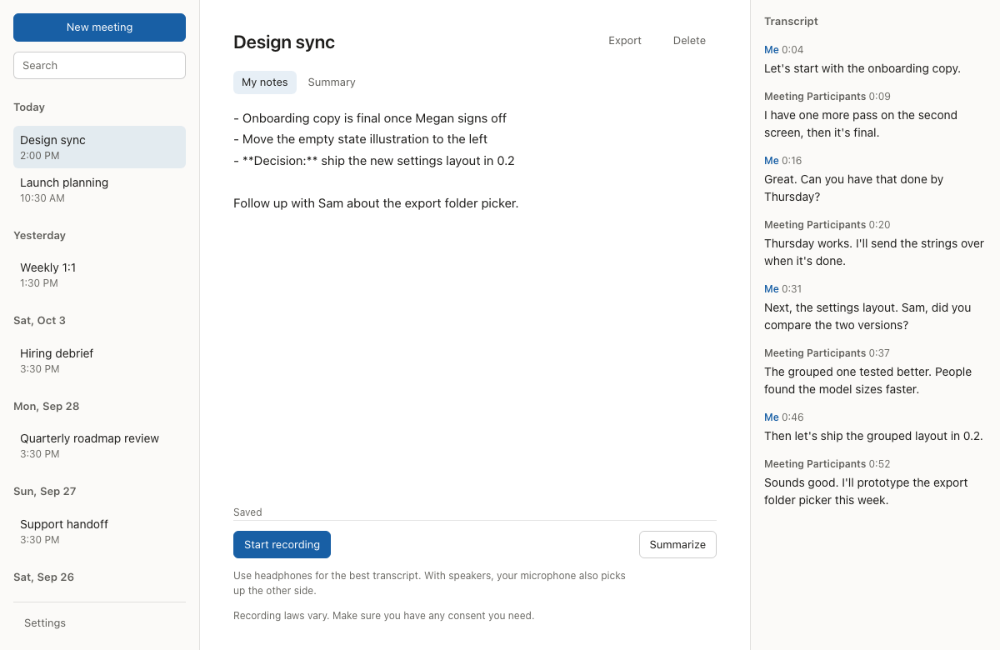
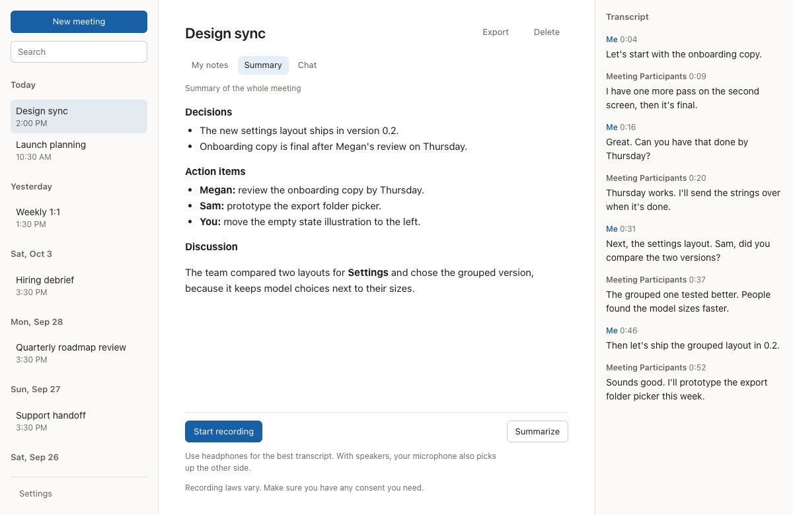

Earshot Notes
Meeting notes that never leave your Mac.
Earshot Notes transcribes your calls, gives you a notepad while you talk, and turns your notes and the transcript into meeting notes. All of it runs on your Mac.
Version 0.1.9 · Free · Apple Silicon and macOS 26 or later

How it's different
Most AI note takers send your meetings somewhere else. Earshot Notes keeps them where they happened.
| Most AI note takers | Earshot Notes |
|---|---|
| Upload your audio to their servers | Transcribes and summarizes on your Mac |
| Need an account and a subscription | Needs neither, and it's free and open source |
| Use whichever model the vendor picked | Lets you choose the model, or bring your own |
| Stop working without a connection | Works offline once a model is downloaded |
| Ask you to trust their privacy policy | Lets anyone check the code |
How it works
-
Record your call
Click Start recording. Earshot Notes listens to your microphone and to your Mac's audio, and transcribes both sides of the call on your Mac as you talk.
-
Take notes alongside the transcript
Type rough notes while the live transcript fills in beside them. Your notes become the outline of the summary.
-
Summarize on your Mac
During or after the meeting, ask for a summary. The local model you chose writes notes grouped by topic, with next steps and their owners.
What it does
-
Both sides of the call
A live transcript of your microphone and the other participants, labeled Me and Meeting Participants.
-
A notepad during the meeting
Type rough notes as you go. They become the outline of the summary.
-
Summaries and answers
During or after the meeting: notes grouped by topic, with the specifics kept and next steps with their owners. Or ask a question and get an answer that links to where it was said.
-
Your vocabulary
List the names your meetings use, and what transcription mishears them as, so transcripts and summaries spell them right.
-
Find and export
Search titles, notes, and transcripts, and export any meeting to Markdown. Untitled meetings are named from their summaries.
-
Out of the way
Earshot Notes lives in the menu bar, keeps recording with its window closed, and can open at login.

Choose your transcription model
Two models transcribe on your Mac. Choose one in Settings; it applies from the next recording. Transcription is English only.
-
Whistle, included
Works from the first launch, with nothing to download. Very fast and light, it listens for your vocabulary terms, and it's at its best with clear audio, such as your own microphone.
-
Whisper large-v3-turbo, a 574 MB download
About half the errors, far more technical terms right, and much better on the other side of a call, where call apps reduce audio to phone quality. Still about 40 times faster than real time on Apple Silicon. It's the heavier choice: it stays loaded while the app is open, using about 1 GB of memory.
Bring your own local AI model
You decide which model writes your notes.
-
Choose from the list
Download Qwen3.5, Gemma 4, or Ministral 3 from Settings. Each download is pinned to a checksum and verified before use.
-
Or import your own
Import any GGUF model file you already have.
-
Built for Apple Silicon
Summaries run through llama.cpp with Metal. Every listed model is sized to leave room for your call on a Mac with 16 GB of memory.
Private by design
Your meetings stay on your Mac.
-
On your Mac
Transcription, summaries, and chat run on your Mac. Audio, transcripts, notes, summaries, and chats are stored on it and nowhere else.
-
Nothing to sign up for
No account, no cloud service, no subscription, and no analytics. The app's logs stay on your Mac too.
-
Works offline
Once a local AI model is downloaded, Earshot Notes makes no network requests. The only ones it ever makes are the model downloads you start.
-
No recordings by default
Audio is transcribed and discarded. It's kept only if you turn on Keep audio recordings.
Earshot Notes is free and open source under the GNU General Public License, version 3, so anyone can check these claims in the code. This site has no analytics or cookies either.
Get Earshot Notes
Download the disk image, open it, and drag Earshot Notes to Applications. On first launch, a checklist asks for microphone and system audio access, and helps you download a local AI model.
Version 0.1.9 · Free · Apple Silicon and macOS 26 or later